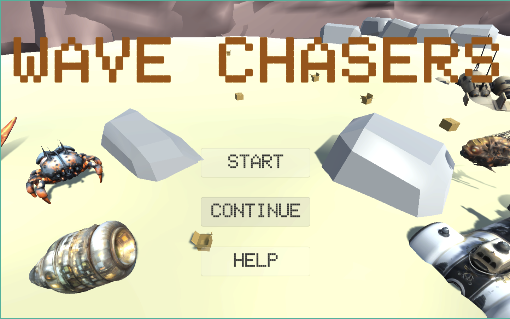
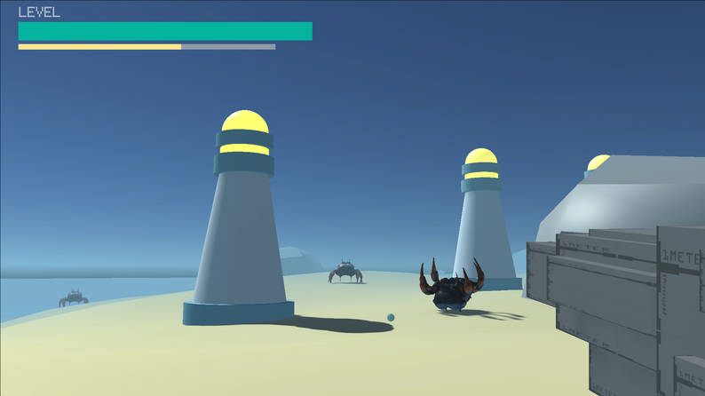
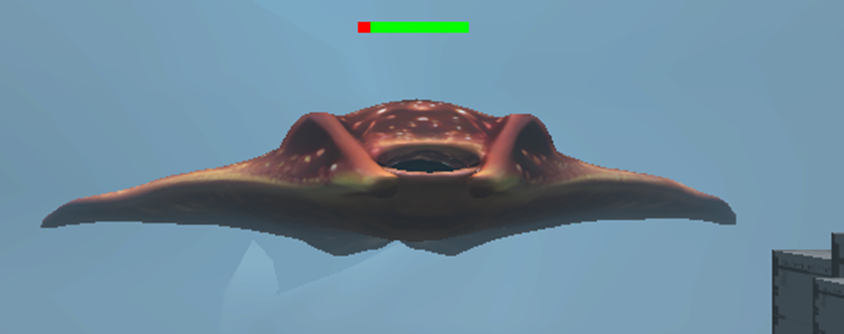
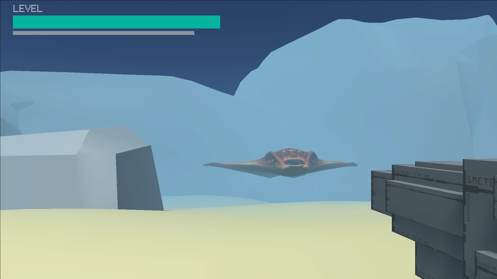
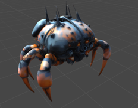
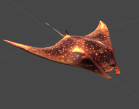

Project Overview
Coastal FPS is a first-person action prototype set in a near-future shoreline devastated by pollution. Toxic waste has transformed marine life into hostile mutated creatures, turning the coast into a hazardous combat zone. Players take on the role of a Cleaner, entering a ruined beach environment to eliminate threats and reclaim a damaged ecosystem through fast-paced shooting and environmental survival.
Game Analysis
The project was developed as a de-make study referencing Dungeonball, focusing on the core appeal of first-person combat, enemy pressure, and emergent gameplay while simplifying features that were too heavy for the production scope, such as procedural level generation, complex map systems, and prop animation pipelines.
In our version, we concentrated on FPS shooting, enemy patrol and pursuit, player health and progression, physical collision with scene props, and a hybrid tower-defense mechanic that introduces strategic support during combat.
Core Features
The game includes first-person shooting with muzzle shake and firing sound effects, enemy spawning and AI navigation, death animation feedback, destructible-feeling obstacle interaction through cardboard box collisions, and an experience-based upgrade loop that improves player attributes as enemies are defeated.
Its most distinctive mechanic is a low-probability tower spawn triggered by enemy death. When activated, a lighthouse-inspired defense tower appears at the defeated enemy's location and automatically attacks newly spawned monsters, adding an unexpected tactical layer to the combat rhythm.
Technical Overview
The prototype uses Unity Starter Assets to build the first-person controller, together with a custom laser gun shooter system for attack logic, recoil, and sound feedback. Enemies are generated through a spawner system, then controlled through code and NavMesh Agent behaviors to patrol, detect the player, chase, and attack.
Additional work included collider setup for environmental props and enemies, tuning agent height and speed, defining base gameplay data, binding animations, and scripting the tower-generation mechanic so that support towers can identify enemies and fire automatically.
Art & Collaboration
The world was modeled as a polluted coastal battlefield in Maya, using uneven sand, sea surfaces, giant rock boundaries, and scattered waste objects to create a ruined beach atmosphere. The hidden defense tower draws visual inspiration from a seaside lighthouse, while the enemy models reinterpret marine creatures with a slightly futuristic and mutated aesthetic.
The project was developed through a clear division of labor: Xiangqi Wen focused on scene construction and tower defense systems, while I was responsible for enemy modeling and the FPS gameplay side. We collaborated remotely across countries and time zones by exchanging Unity packages and C# files throughout development.
Gallery





